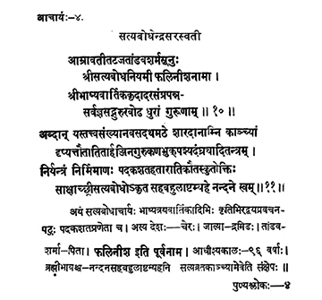

4. आचार्य - 4 - सत्यबोधेन्द्रसरस्वती
आम्रावती ••• गुरूणाम् ॥ १० ॥
अब्दान्यस्तत्त्व ••• नन्दने स्वम् ॥ ११ ॥
The saint Satyabodha, by name Phalinīśa (before initiation into sainthood), son of Tāṇḍavaśarma living on the banks of Āmrāvatī river, the noble preceptor, who authored commentatorial and Vārtika texts on Advaita Vedānta bore the responsibilities of preceptor.
Then, Śrī Satyabodha, who lived for ninety six years in Kāñci in the Maṭha called Śāradā, making unrestrained the systems of haughty Kumārila , Buddhists, Jains, prabhākara Prabhākara, Kaṇāda and Akṣapāda and having shattered the enemies by the text Padakaśata realised his Self on the eighth day of the dark fortnight in the year Nandana.
